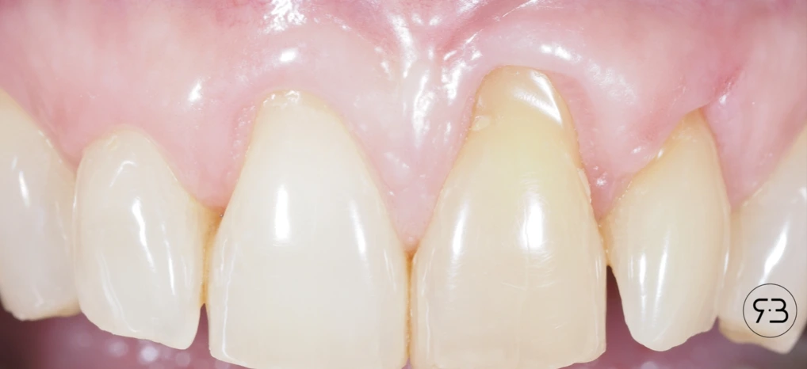
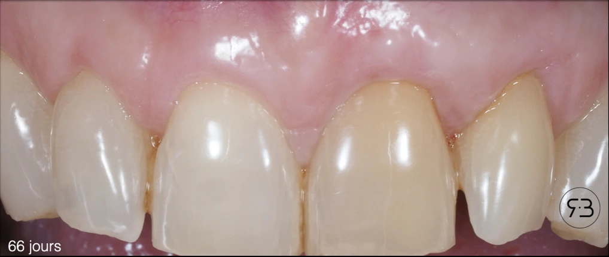

Parodontologie
Greffe gingivale


Qu’est-ce qu’une récession gingivale ?
Une récession gingivale, aussi appelée récession parodontale ou, plus couramment, « déchaussement », correspond à un retrait de la gencive. La racine de la dent, normalement protégée, se retrouve alors exposée dans la bouche.
Avec le temps, une récession peut s’aggraver et entraîner :
- des sensibilités au froid, au chaud ou au brossage ;
- une accumulation de plaque bactérienne sur la racine, plus difficile à nettoyer ;
- une gêne esthétique : la dent paraît plus longue et la gencive irrégulière.
Qu’est-ce qu’une greffe de gencive et pourquoi la réaliser ?
Une greffe de gencive, également appelée greffe gingivale ou chirurgie muco-gingivale, est une intervention chirurgicale qui consiste à greffer un fragment de gencive ferme (tissu kératinisé), afin de renforcer les tissus gingivaux et/ou recouvrir les racines exposées.
Ce traitement a plusieurs objectifs :
- protéger les dents et leurs racines ;
- réduire les sensibilités ;
- stabiliser la gencive et limiter l’évolution de la récession ;
- améliorer l’esthétique du sourire.
La consultation préopératoire
Avant toute greffe de gencive, une consultation est indispensable. Elle permet de comprendre vos attentes et d’examiner vos gencives pour proposer la solution la mieux adaptée.
Au cours de ce rendez-vous, nous vous expliquons :
- le déroulement de l’intervention ;
- les suites prévisibles et les risques ;
- l’importance de l’hygiène et du suivi
Le devis, les recommandations à suivre avant et après l’intervention et l’ordonnance vous sont remis lors de cette consultation.
Déroulement de l’intervention
La greffe de gencive est réalisée au cabinet, à Châtenay-Malabry, sous anesthésie locale. Vous restez conscient : vous ne ressentez pas de douleur.
Selon votre situation clinique, l’intervention comprend tout ou partie des étapes suivantes :
- Désinfection de la peau autour de la bouche et de l’intérieur de la bouche avec un antiseptique.
- Anesthésie locale des zones à traiter.
- Préparation de la zone à greffer (le site receveur) : la gencive est préparée autour des dents ou des implants concernés pour accueillir le greffon.
- Prélèvement du greffon (le site donneur) : un petit fragment de gencive est prélevé, le plus souvent au palais, parfois au niveau de la tubérosité (la zone située derrière la dernière molaire du haut).
- Mise en place du greffon : il est positionné sur la zone à traiter et maintenu par des points de suture.
- Fermeture du site de prélèvement : il est suturé, puis protégé par une colle hémostatique qui limite le saignement.
Les suites après l’intervention
Les bons gestes les premiers jours
- Prenez les médicaments prescrits à heures régulières, en respectant les doses.
- Appliquez du froid sur la lèvre ou la joue, du côté de la greffe (une poche de glace protégée par un linge), par périodes de 10 minutes.
- Mangez tiède ou froid, et mou, en mâchant de préférence du côté opposé à la greffe.
- Ne brossez pas la zone opérée pendant les deux premières semaines. Continuez à brosser normalement les autres dents.
- Ne tirez pas sur votre lèvre ou votre joue pour regarder la greffe.
- Ne fumez pas : le tabac perturbe la cicatrisation et augmente le risque d’échec de la greffe.
- Ne crachez pas et ne faites pas de bains de bouche vigoureux.
- Évitez les efforts physiques intenses.
Ce qui est normal
- Un léger saignement est possible, en particulier au palais. Ne rincez pas et ne crachez pas : cela entretient le saignement.
- Une douleur modérée est possible, surtout au niveau du site de prélèvement. Elle est soulagée par les antalgiques prescrits et disparaît rapidement.
- Un gonflement (œdème) modéré est possible. Il est maximal vers le deuxième jour, puis diminue progressivement. Le froid aide à le limiter.
- Un hématome (bleu) peut apparaître. Il est sans gravité et disparaît en quelques jours.
Les rendez-vous de contrôle
Des rendez-vous de contrôle sont prévus 7 jours, 14 jours et 3 mois après l’intervention. Ils permettent de contrôler la cicatrisation et, si nécessaire, de retirer les points de suture.
Questions fréquentes
- Greffe gingivale, greffe de gencive : est-ce la même intervention ?
- Oui. La greffe gingivale est aussi appelée greffe de gencive, chirurgie muco-gingivale ou, en langage courant, chirurgie des gencives. L’objectif reste identique : renforcer les tissus gingivaux et/ou recouvrir une racine exposée.
- Quand une greffe gingivale est-elle indiquée ?
- Principalement en cas de récession gingivale avec exposition de la racine, de gencive trop fine, de sensibilités dentinaires ou de préjudice esthétique. L’indication est posée site par site après examen parodontal.
- Comment se déroule l’intervention ?
- Sous anesthésie locale, au cabinet de Châtenay-Malabry (92). Un greffon est généralement prélevé au palais, puis suturé sur le site à traiter. La séance dure généralement de 60 à 90 minutes.
- La greffe de gencive est-elle douloureuse ?
- L’intervention est indolore grâce à l’anesthésie locale. Une gêne au niveau du site de prélèvement est fréquente les jours suivants ; elle est contrôlée par les antalgiques prescrits.
- Peut-on greffer la gencive en présence d’une parodontite active ?
- Non. Une greffe posée sur un parodonte inflammatoire a un pronostic défavorable : le traitement des maladies parodontales et la stabilisation de la parodontite précèdent la chirurgie muco-gingivale.